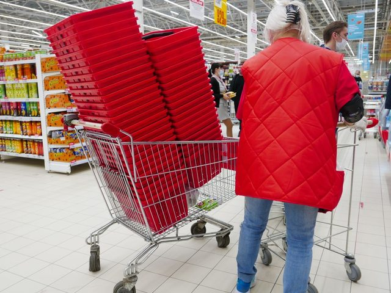
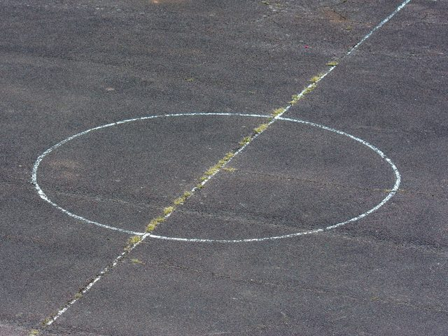
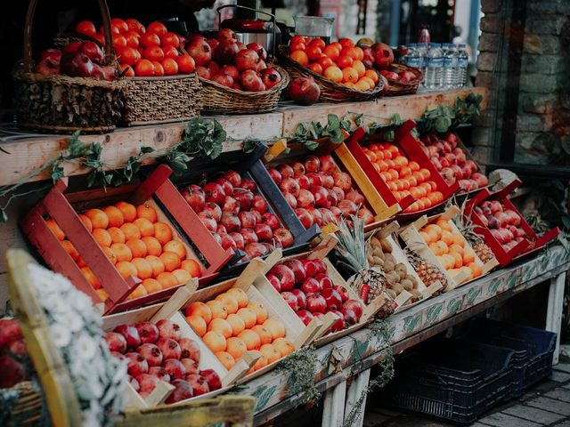
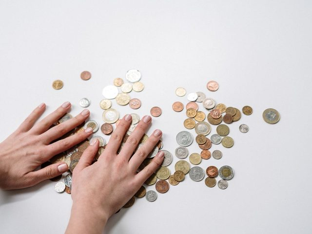
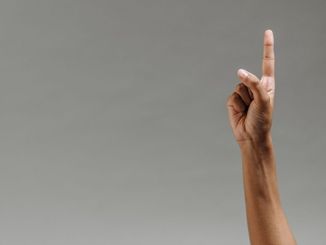
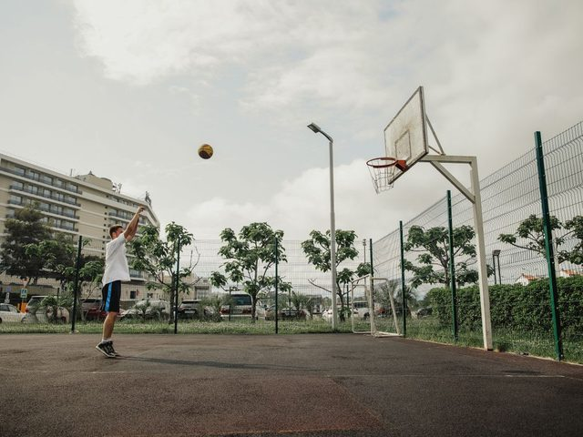

LALA WORD · UNIT 12
一字多義（十二）
The Beating Heart
23 個單字一字多義
本單元單字一覽
bill 是帳單，也是「鈔票」和「鳥嘴」；nail 是指甲，也是「釘子」。這個單元有 6 個主題單字、17 個更多單字。
pushfullcircletestrecordstandanglebillcarecoldcountdeadexcusefairgroupheadholdmatternailpasspointshapethrow
每個字先聽 🔊，再一個意思一個意思看例句。
1. push 主題單字．4 個意思

push
push - pushed - pushed - pushing
v.推；推擠
Push the door to open it.
推門就能打開。
n.推一下
Can you give the car a push?
你可以幫忙推一下車嗎？
v.按（按鈕）
Push the button to call the elevator.
按按鈕叫電梯。
v.逼迫
Don't push yourself too hard.
別把自己逼得太緊。
2. full 主題單字．4 個意思
full
full - fuller - fullest
adj.完整的；全部的full name 全名；full marks 滿分
Please write your full name here.
請在這裡寫你的全名。
adj.吃飽的
No more, thanks. I'm full.
不用了，謝謝，我吃飽了。
adj.滿的
The bus is full. Let's wait for the next one.
公車滿了，我們等下一班。
adj.充滿的be full of 充滿
The room is full of balloons.
房間裡滿是氣球。
3. circle 主題單字．5 個意思

circle
circle - circled - circled - circling
n.循環
Exercise and good sleep make a healthy circle.
運動和好睡眠形成健康的循環。
n.圓圈
The kids sat in a circle.
孩子們圍成一圈坐著。
n.圈子；界
She has a large circle of friends.
她的朋友圈很廣。
v.盤旋；繞圈
A bird circled over the lake.
一隻鳥在湖上盤旋。
v.圈起來
Circle the right answer.
把正確答案圈起來。
4. test 主題單字．4 個意思

test
test - tested - tested - testing
n.檢查eye test 視力檢查；blood test 驗血
I had an eye test today.
我今天做了視力檢查。
v.檢測；測試
They tested the new phone for a month.
他們測試新手機一個月。
n.考試；測驗take a test 考試；pass / fail a test 通過／沒通過
We have an English test tomorrow.
我們明天有英文考試。
v.考驗
The long hike tested our strength.
長途健行考驗我們的體力。
5. record 主題單字．3 個意思

record
record - recorded - recorded - recording
v.記錄
Record your weight every day.
每天記錄你的體重。
v.錄製
The band recorded a new song.
樂團錄了一首新歌。
n.紀錄；最佳成績set / break a record 創／破紀錄（名詞唸 [ˋrɛkɚd]）
She broke the school record.
她打破了學校紀錄。
6. stand 主題單字．3 個意思

stand
stand - stood - stood - standing
v.忍受
I can't stand the hot weather.
我受不了這麼熱的天氣。
v.站立stand back 往後站；stand for 代表
Please stand still for the photo.
拍照請站好別動。
n.攤位；架子music stand 譜架
We bought juice at a fruit stand.
我們在水果攤買了果汁。
7. angle 更多單字．3 個意思

angle
複數 angles
n.角度
A square has four right angles.
正方形有四個直角。
n.（看的）角度
Take the photo from a different angle.
從不同的角度拍照。
n.觀點
Let's look at the problem from another angle.
我們從另一個觀點看這個問題。
8. bill 更多單字．4 個意思
bill
複數 bills
n.帳單
Can we have the bill, please?
請給我們帳單。
n.紙鈔
I only have a 1,000-dollar bill.
我只有一張千元鈔。
n.法案
The new bill will help the farmers.
新法案會幫助農民。
n.鳥嘴
The duck has a yellow bill.
這隻鴨子有黃色的嘴。
9. care 更多單字．3 個意思

care
care - cared - cared - caring
n.照顧take care of 照顧；Take care! 保重
Take care of your little brother.
照顧好你弟弟。
n.小心with care 小心
Handle the glass with care.
小心拿玻璃杯。
v.在乎care about 在乎
I don't care what others think.
我不在乎別人怎麼想。
10. cold 更多單字．3 個意思
cold
cold - colder - coldest
adj.冷的
It's cold today. Wear a jacket.
今天很冷，穿件外套。
adj.冷淡的give + 人 + the cold shoulder 冷落某人
Why are you so cold to me?
你為什麼對我這麼冷淡？
n.感冒catch / have a cold 感冒
I have a bad cold.
我得了重感冒。
11. count 更多單字．4 個意思

count
count - counted - counted - counting
v.數；計算count + 人 + in 算某人一份
Can you count to one hundred?
你會從一數到一百嗎？
n.計數lose count of 數不清
I lost count of how many times I watched it.
我已經數不清看了幾次。
v.有重要性；算數count on 依靠
Every vote counts.
每一票都很重要。
n.總數
The teacher did a head count on the bus.
老師在車上清點人數。
12. dead 更多單字．3 個意思
dead
adj.死的
The fish in the tank is dead.
魚缸裡的魚死了。
adj.壞掉的；沒電的dead end 死巷
My phone is dead. Can I use yours?
我的手機沒電了，可以借你的嗎？
adj.死氣沉沉的
The town is dead at night.
這個小鎮晚上很冷清。
13. excuse 更多單字．2 個意思
🙇
excuse
excuse - excused - excused - excusing（名詞唸 [ɪkˋskjus]）
n.藉口make excuses 找藉口
Stop making excuses.
別再找藉口了。
v.原諒Excuse me. 不好意思；借過
Please excuse me for being late.
請原諒我遲到。
14. fair 更多單字．4 個意思

fair
fair - fairer - fairest
adj.公平的
That's not fair!
這不公平！
adj.合理的
The price is fair.
這個價格很合理。
adj.（膚色）白皙的；（頭髮）金色的
The baby has fair hair.
寶寶有一頭淡金色的頭髮。
n.展覽；博覽會
We went to the book fair.
我們去了書展。
15. group 更多單字．3 個意思

group
group - grouped - grouped - grouping
n.群；團體
We work in groups of four.
我們四人一組。
n.（企業）集團
His dad works for a big business group.
他爸爸在一家大企業集團上班。
v.分類；分組
Group the animals by where they live.
把動物依照住的地方分類。
16. head 更多單字．4 個意思
head
head - headed - headed - heading
n.頭shake one's head 搖頭
He shook his head.
他搖搖頭。
n.頭腦lose one's head 失去理智
Use your head!
動動腦！
n.負責人；主管
Ms. Wu is the head of our school.
吳老師是我們的校長。
v.前往
We're heading home.
我們正要回家。
17. hold 更多單字．5 個意思
hold
hold - held - held - holding
v.拿著；握住
Hold my hand when we cross the street.
過馬路時牽著我的手。
v.舉辦
The school will hold a sports day next week.
學校下星期要辦運動會。
v.容納
This bottle holds one liter of water.
這個瓶子可以裝一公升的水。
v.保持（紀錄）
He holds the school record for the 100 meters.
他保持學校一百公尺的紀錄。
v.等待；暫停hold on 等一下；hold one's breath 憋氣
Hold on. I'm coming.
等一下，我來了。
18. matter 更多單字．3 個意思

matter
matter - mattered - mattered - mattering
n.事情as a matter of fact 事實上
As a matter of fact, I don't like cake.
事實上，我不喜歡蛋糕。
n.麻煩；問題What's the matter? 怎麼了
What's the matter with you?
你怎麼了？
v.要緊；有關係
It doesn't matter.
沒關係。
19. nail 更多單字．4 個意思

nail
nail - nailed - nailed - nailing
n.指甲fingernail 手指甲；toenail 腳趾甲
Cut your nails every week.
每週剪指甲。
n.釘子
Hand me a nail and the hammer.
把釘子和槌子遞給我。
v.釘牢
Dad nailed the sign to the door.
爸爸把牌子釘在門上。
v.做到；做得很好
You nailed it!
你做得太棒了！
20. pass 更多單字．5 個意思

pass
pass - passed - passed - passing
v.經過
We passed a park on the way.
我們在路上經過一座公園。
v.傳遞
Please pass me the salt.
請把鹽遞給我。
v.度過（時間）
We played games to pass the time.
我們玩遊戲打發時間。
v.通過（考試）
I passed the math test!
我數學考試及格了！
n.通行證；票卡
Show your bus pass to the driver.
把公車定期票給司機看。
21. point 更多單字．5 個意思

point
point - pointed - pointed - pointing
n.小數點
Two point five is bigger than two.
二點五比二大。
n.得分；分數
Our team won by two points.
我們隊贏了兩分。
n.觀點；重點from one's point of view 從某人的觀點
I see your point.
我懂你的意思。
n.目的；意義
What's the point of waiting?
等下去有什麼用？
v.指point at 指著
It's rude to point at people.
用手指著別人不禮貌。
22. shape 更多單字．4 個意思

shape
shape - shaped - shaped - shaping
n.形狀in the shape of 以…的形狀
The cookie is in the shape of a heart.
這塊餅乾是心形的。
n.健康狀況；身材in shape 健康；身材好；out of shape 身材走樣
I run every day to stay in shape.
我每天跑步保持身材。
v.塑造成…形狀
Shape the clay into a bowl.
把黏土捏成碗的形狀。
v.決定；影響
What you do today will shape your future.
你今天做的事會影響你的未來。
23. throw 更多單字．2 個意思

throw
throw - threw - thrown - throwing
v.丟；擲throw away 丟掉；throw up 嘔吐
Throw the ball to me!
把球丟給我！
v.舉辦（派對）
Let's throw a party for Mom.
我們幫媽媽辦個派對吧。
一字多義：最常見 vs. 容易忽略的意思
| 單字 | 最常見的意思 | 容易忽略的意思 |
|---|---|---|
| bill | 帳單 | 紙鈔；法案；鳥嘴 |
| nail | 指甲 | 釘子；做得很好 |
| stand | 站 | 忍受；攤位 |
| cold | 冷的 | 感冒；冷淡的 |
| count | 數 | 重要；count on 依靠 |
| fair | 公平的 | 展覽；白皙的 |
| head | 頭 | 負責人；前往 |
| shape | 形狀 | 身材；健康狀況 |
| point | 指 | 分數；重點；小數點 |
常用片語
| 片語 | 意思 | 例句 |
|---|---|---|
| take care of | 照顧 | I take care of my dog. |
| be full of | 充滿 | The box is full of toys. |
| count on | 依靠 | You can count on me. |
| hold on | 等一下 | Hold on, please. |
| What's the matter? | 怎麼了？ | What's the matter with you? |
| stay in shape | 保持身材 | She swims to stay in shape. |
| throw away | 丟掉 | Don't throw away the box. |
快問快答：這句的 粗體字 是什麼意思？
1Don't push yourself too hard.逼迫
2The room is full of balloons.充滿的
3Circle the right answer.圈起來
4The long hike tested our strength.考驗
5She broke the school record.紀錄；最佳成績
6We bought juice at a fruit stand.攤位；架子
7Let's look at the problem from another angle.觀點
8The duck has a yellow bill.鳥嘴
快問快答：這句的 粗體字 是什麼意思？
1I don't care what others think.在乎
2I have a bad cold.感冒
3The teacher did a head count on the bus.總數
4The town is dead at night.死氣沉沉的
5Please excuse me for being late.原諒
6We went to the book fair.展覽；博覽會
7Group the animals by where they live.分類；分組
8We're heading home.前往
學完了！接下來
複習方法
review
- 回到「📗 單字卡」，按「遮中文」，看例句說出每個意思
- 特別記「容易忽略的意思」（例如 pen 圍欄、ball 舞會）
- 每個例句跟著 🔊 唸一次
準備好了
- 按右上角「📝 前往測驗」
- 測驗錯的題目要訂正到全對
- 訂正完成補送 1 點